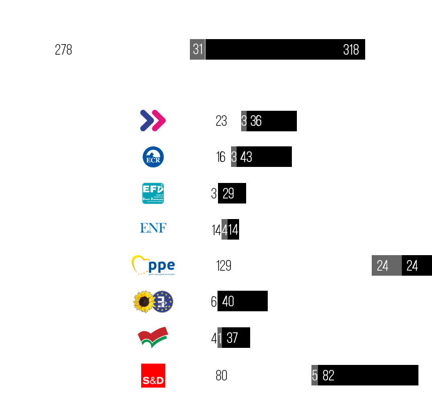
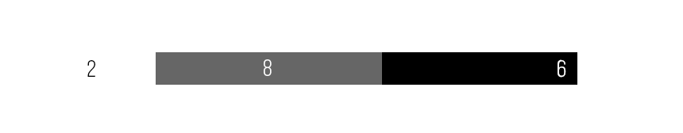

| Praha, 12. září 2018 – Poslanci Evropského parlamentu dnes odhlasovali směrnici o autorském právu na jednotném digitálním trhu Evropské unie, na jejíž úskalí Piráti dlouhodobě upozorňovali. A to v podobě, která zásadně uškodí svobodě internetu i podnikatelskému prostředí - tedy včetně problematických článků 11 a 13.
,,Nejproblematičtější články 11 a 13 byly změněny jen kosmeticky a europoslanci vyměnili svobodu za tuhou kontrolu a marnou naději velkých vydavatelů po vyšším zisku. Tato opatření zásadně překopávají principy internetu, jak ho známe. V důsledku na nich vydělají jen největší korporace, které se zbaví konkurence a upevní místo na trhu,” říká místopředseda Pirátů Mikuláš Peksa. ,,Současná verze článku 11 (393 pro, 279 proti) umožňuje zdarma reprodukovat jen ‚jednotlivá slova‘ novinových článků, čímž velmi připomíná ‚daň z odkazu‘ před pěti lety přijatou v Německu. Za tu dobu na něm žádný novinář ani vydavatel nevydělal, na trh nemohly vstoupit novinářské start-upy a soudy stále zcela nevyřešily, jak přesně se mají jednotlivé situace posuzovat. Stejný zmatek nás čeká na úrovni celé EU a nikdo nepředložil jediný argument, proč by to mělo být tentokrát jinak,” píše pirátská europoslankyně Julie Reda. ,,Článek 13 (prošel 366 pro, 297 proti) činí provozovatele všech kromě těch nejmenších platforem odpovědnými za obsah, který se u nich vyskytuje. To je přinutí nainstalovat filtry nahrávaného obsahu, které jsou nejen nákladné, ale také mají sklony k chybám. Neumí rozlišit jemnější odstíny lidské komunikace jako parodii a satiru a z povahy věci budou extrémně zneužitelné. Technicky takový filtr musí fungovat okamžitě a není možné lidskou silou kontrolovat, co vše ve filtru je. To je recept na katastrofu,” hodnotí současnou podobu směrnice Mikuláš Peksa. "Výsledek hlasování je pro nás velkým zklamáním. V konečných důsledku totiž zasáhne především malé a střední podniky, menší platformy, blogy a diskusní fóra. Směrnice tak bude mít zásadní dopad na svobodu internetu a přístup k informacím” říká David Albrecht, předseda spolku Za bezpečný a svobodný internet, z.s.) Směrnice nyní vstupuje do takzvaného trialogu, tedy jednání mezi úředníky, europoslanci a vysokými představiteli předsedající země za zavřenými dveřmi. Piráti budou nadále proti této podobě směrnice bojovat a budou se zasazovat o její změnu na úrovni EU, případně alespoň o přípravu co nejrozumnější a nejvolnější úpravy na úrovni národní vlády. |

pro česko

| Stanislav Polčák, Starostové a nezávislí | pro | EPP |
| Michaela Šojdrová, KDU-ČSL | pro | EPP |
| Jiří Payne, Strana svobodných občanů | proti | EFDD |
| Petr Ježek, zvolen za ANO 2011, hnutí opustil | proti | ALDE/ADLE |
| Olga Sehnalová, ČSSD | proti | S&D |
| Kateřina Konečná, KSČM | proti | GUE-NGL |
| Pavel Telička, zvolen za ANO 2011, hnutí opustil | proti | ALDE/ADLE |
| Tomáš Zdechovský, KDU-ČSL | proti | EPP |
| Jiří Pospíšil, TOP 09 a Starostové | zdržel se | EPP |
| Luděk Niedermayer, TOP 09 a Starostové | zdržel se | EPP |
| Evžen Tošenovský, ODS | zdržel se | ECR |
| Martina Dlabajová, ANO 2011 | zdržel se | ALDE/ADLE |
| Pavel Poc, ČSSD | zdržel se | S&D |
| Jaromír Štětina, TOP 09 a Starostové | zdržel se | EPP |
| Pavel Svoboda, KDU-ČSL | zdržel se | EPP |
| Dita Charanzová, ANO 2011 | zdržel se | ALDE/ADLE |
| Jiří Maštálka, KSČM | nepřítomen | GUE-NGL |
| Miroslav Poche, ČSSD | nepřítomen | S&D |
| Jaromír Kohlíček, KSČM | nepřítomen | GUE-NGL |
| Jan Zahradil, ODS | nepřítomen | ECR |
| Jan Keller, ČSSD | nepřítomen | S&D |
V PŮVODNÍ PODOBĚ
| Internet vznikl jako svobodné a otevřené médium, pomocí kterého může každý získávat i šířit informace, a je základem dnešní moderní společnosti. Nechceme, aby se stal pouhým obchodním nástrojem firem a zájmových skupin. |
|
|||||||
| Již v červnu jsme udělali mohutnou e-mailovou kampaň, aby poslanci Evropského parlamentu věděli, že nám na našich svobodách záleží - a mělo to velký dopad. Nyní je třeba jim to připomenout!
Mrkněte do naší tabulky poslanců a jejich hlasování a napište jim (lze použít e-mail jmeno.prijmeni@europarl.europa.eu).
Nevíte, jak e-mail formulovat? Nechcete být příliš obecní? Připravili jsme pro vás návrh e-mailu, nicméně pamatujte, že čím méně univerzální a více osobní, tím spíše bude mít dopad: Zákony o autorských právech jsou zastaralé a podporujeme, aby se prosadila jejich aktualizace. Ne však v takovéto podobě. Společně prosadíme změny! |
| Společnost Seznam.cz se od počátku projednávání směrnice vymezovala vůči článkům 11 a 13 a žádala jejich úplné vyškrtnutí. Především kvůli principiálnímu problému s omezováním dostupných informací pro uživatele internetu. Dlouhodobě se věnujeme i mediální sféře a jsme vydavatelem vlastního obsahu. Jako vydavatel se domníváme, že současná právní úprava je dostatečná. Oficiální vyjádření si můžete přečíst zde. vyjádření zaslal Michal Feix předsedovi Bartošovi |

| Mikuláš Peksa poslanec PS PČR, 4. místopředseda Pirátů |
| Žádný filtr nemůže posoudit všechny formy obsahu, na které se návrh vztahuje. Článek 13 je tedy technicky neproveditelný a je absurdní očekávat od soudů ve 27 členských zemí EU, že budou neustále zjišťovat, jaké filtry jsou „nejlepší“. |

| Ivan Bartoš poslanec PS PČR, předseda Pirátů |
| Článek 13 je skutečnou hrozbou jak pro svobodu internetu, tak svobodu slova celkově. Memy, remixy, blogy, parodie, i livestream – vše, co nyní považujeme za samozřejmou a neškodnou zábavu můžou filtry vyhodnotit jako nedovolené kopírování a automaticky odstranit. Týká se to nás všech. Ozvěme se, dokud to lze zastavit! |

| Markéta Gregorová vedoucí zahraničního odboru Pirátů, místopředsedkyně PP-EU |
| Nevzdávejme se! Máme informace od pirátské europoslankyně Julie Redy, že poměr odpůrců a podporovatelů směrnice je v Evropském parlamentu těsný. Na každém hlasu tak záleží! Přesvědčte svého europoslance, aby byl proti. |

| František Kopřiva poslanec PS PČR |
| Nadnárodní firmy skrývají svou touhu po vyšších ziscích za snahu ochránit evropský kulturní průmysl před zahraničními internetovými platformami. Ale autorský zákon není zdrojem problému. Je tak nejen zbytečné jím argumentovat, ale může to být dokonce nebezpečné pro svobodu slova, nezávislé autory či malá vydavatelství. |
|
|||||
|
|||||||
Přes 70 osobností adresovalo dopis předsedovi Evropského parlamentu Antoniu Tajanimu.
Na nebezpečí článku 13 směrnice o autorském právu na jednotném digitálním trhu upozornily v dopise z 12. června osobnosti, které se podílely na rozvoji internetu a komunikačních technologií. Připravovaná směrnice má zavést povinnost používat automatizované filtry pro kontrolu uživateli nahraného obsahu. Mezi autory dopisu jsou:
Autoři dopisu upozorňují, že v Evropě dosud fungoval vyvážený model zavedený směrnicí o elektronickém obchodu, v němž jsou za legálnost odpovědní uživatelé, kteří obsah nahrávají, zatímco provozovatelé platforem jsou odpovědní za odstranění nezákonného obsahu. Připravovaná směrnice tuto logiku obrací. Odpovědnost bude ležet právě na provozovatelích. Škody, které takové opatření může svobodnému internetu způsobit, jsou zatím těžko předvídatelné, ale dle autorů budou zřejmě pro jeho fungování zásadní. |
„Místo, aby internet sloužil k všeobecnému prospěchu lidí, pomalinku, tu více, tu méně hlasitě se mění v nástroj kontroly a manipulace.“ To jsou slova Jiřího Kadeřávka z petice za založení Pirátské strany v roce 2009. Piráti podporují svobodné šíření informací a bojují proti cenzuře internetu již od svého založení. Tváří v tvář požadavkům velkých firem neustoupí. Německá pirátská europoslankyně Julia Reda již čtyři roky bojuje proti podobným tendencím a nyní i proti předkládané směrnici. V Evropském parlamentu je na to ale sama. Pomozme jí a ukažme i ostatním europoslancům, že cenzura je pro nás nepřípustná! |